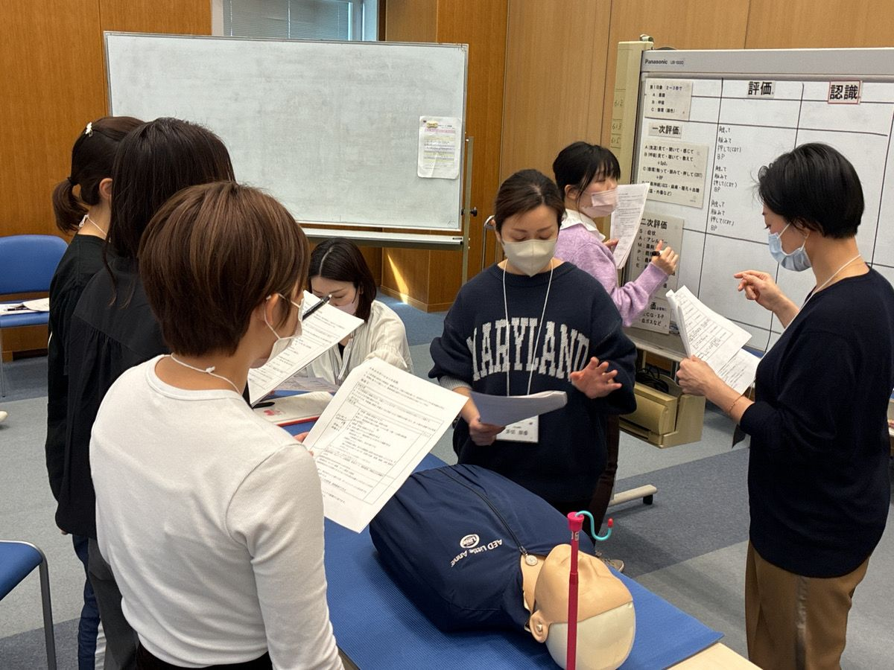
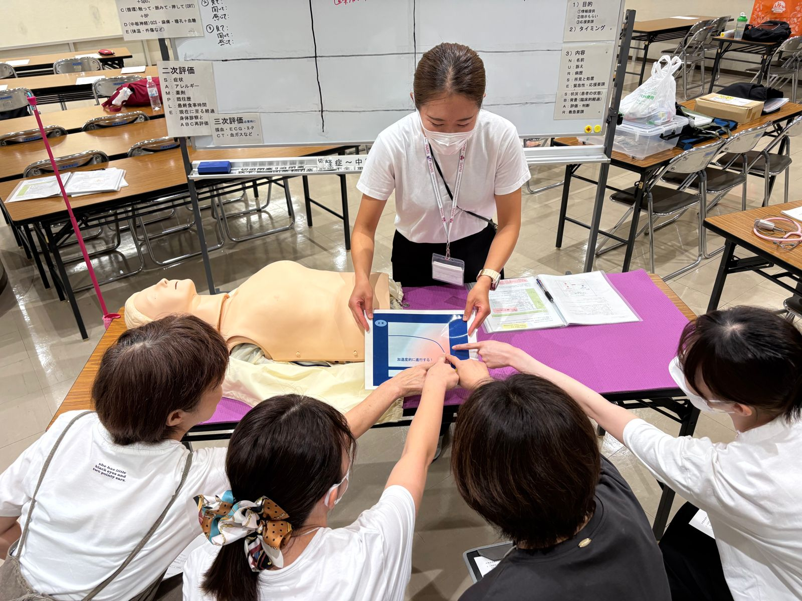
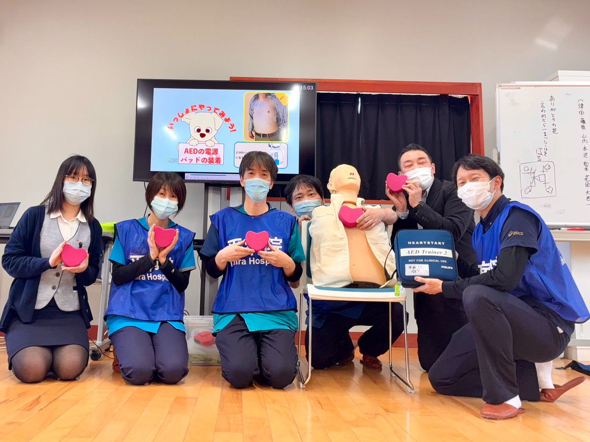

WHY IT MATTERS一歩を踏み出す勇気と、
一歩を踏み出す勇気と、
命をつなぐ仕組みを。
日本では毎年、多くの人が病院の外で突然の心停止に陥っています。救急車が到着するまでのわずか数分間、その場に居合わせた人が何もできなければ、救えるはずの命も救えなくなってしまいます。
しかし、誰かが一歩を踏み出し、胸骨圧迫を行い、AED（自動体外式除細動器）を使うことができれば、救命の可能性は大きく高まります。心停止はいつ、どこで、誰に起こるかわかりません。少しの知識と勇気が、大切な命を救う鍵になります。
OUR STRENGTHS
当協会の強み

01医療・看護のプロによる
確かな指導
医療の最前線を知る看護師や専門スタッフが直接指導。マニュアルにとどまらない、現場で「本当に使える」知識と技術が身につきます。

02「一歩を踏み出す」ための
心理的サポート
「怖い」「間違えたらどうしよう」という不安に寄り添い、誰でも迷わず動けるようになるための丁寧なカリキュラム（PUSHプログラム等）を重視しています。

03地域に根ざした
草の根の活動
備前市・赤磐市・岡山市・倉敷市を中心に、学校・行政・地域団体と連携しながら「命をつなぐ輪」を広げています。
COURSES
講習プラン
学校・企業・地域団体・スポーツチームなどへの出張講習も承ります。人数や会場に合わせてご相談ください。
90分はじめての方に
救命サポーター ベーシック
胸骨圧迫とAEDの使い方を中心に、「その場で動ける」ための基本を短時間で身につけるコースです。
- 受講料
- ［料金］
- 対象
- ［対象者］
180分防災士資格取得の救命講習として認定
救命サポーター スタンダード
普通救命講習Ⅰと同等のカリキュラム・時間で行うコース。日本防災士機構より、防災士資格取得のための救命講習として認められています。
- 受講料
- ［料金］
- 対象
- ［対象者］
PUSH
プロジェクト市民の方・学生向けの救命講習。胸骨圧迫とAEDで「最初の一歩」を。
プロジェクト市民の方・学生向けの救命講習。胸骨圧迫とAEDで「最初の一歩」を。
INARS
急変回避医療・介護・看護教育向け。心停止を未然に防ぐ臨床ライフサポート研修。
急変回避医療・介護・看護教育向け。心停止を未然に防ぐ臨床ライフサポート研修。
ご寄付のお願い
私たちの活動は、皆様の温かいご支援・ご寄付によって支えられています。お寄せいただいたご寄付は、講習活動の維持・拡大と救命資器材の充実のために大切に使わせていただきます。